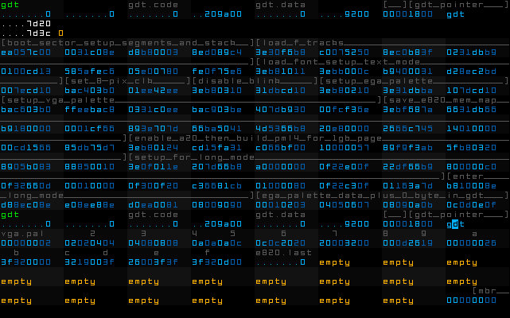

20151222 - Random Holiday 2015
Google Photos = Actually Working (edit) Fail Great
Minus has basically imploded loosing a lot of the image content on this blog,
unfortunately Google Photos is
not a great alternative,
while it seems to support original quality, it does not, see the 2nd image (got low-passed)!
EDIT: turns out Blogger is the source of this problem, the preview sends back re-compressed images,
but after the initial posting, the original quality file is actually presented.
So Google Photos seems to be good, and it's a quality bug in Blogger Preview which was the source of the problem.
Vintage Interactive Realtime Operating System
Taking part of my Christmas vacation time
to reboot my personal console x86-64 OS project.
I've rebooted this project more times than I'm willing to disclose on this blog.
Hopefully this reboot will stick long enough to build something real with it.
Otherwise it's been great practice, and the evolution of ideas has certainly been enlightening.
Here is a shot of the binary data for the boot sector in the editor,

My goal is to rewind to the principals of the Commodore 64,
just applied to modern x86-64 hardware and evolved down a different path.
In my case to build a free OS with open source code which boots into a programming interface,
which fully exposes the machine, and provides some minimal interface to access hardware
including modern AMD GPUs.
With a feature list which is the inverse of a modern operating system:
single-user, single-tasking, no paging, no memory protection ...
the application gets total control over the machine,
free to use parallel CPU cores and GPU(s) for whatever it wants.
Ultimately manifesting as a thumb drive which can be plugged into a x86-64 machine
with compatible hardware and boot the OS to run 100% from RAM, to run software.
A Tale of Two Languages
C64 provided Basic at boot, I'm doing something vastly different.
Booting into an editor
which is a marriage
between
a spreadsheet, hex editor,
raw memory view, debugging tool,
interactive live programming environment,
annotated sourceless binary editor with automatic relink on edit,
and a forth-like language.
Effectively I've embedded a forth-like language in a sourceless binary framework.
The editor runs in a virtualized console
which can easily be embedded inside an application.
The editor shows 8 32-bit "cells" of memory per line (half cacheline),
with a pair of rows per cell.
Top row has a 10-character annotation (with automatic green highlight if the cell is referenced in the binary),
the botton row shows the data formatted based on a 4-bit tag stored in the annotation.
Note the screen shot showing the boot sector
was hand assembled 8086 (so is embedded data),
built from bits of NASM code chunks then disassembled
(it's not showing any of the embedded language source).
Tags are as follows,
unsigned 32-bit word
signed 32-bit word
four unsigned 8-bit bytes
32-bit floating point value
-----
unsigned 32-bit word with live update
signed 32-bit word with live update
four unsigned 8-bit bytes with live update
32-bit floating point value with live update
-----
32-bit absolute memory address
32-bit relative memory address [RIP+imm32]
toe language (subset of x86-64 with 32-bit padded opcodes)
ear language (forth-like language, encoded in binary form)
-----
5-character word (6-bits per character)
last 3 saved for GPU binary disassembly
Editor designed to edit an annotated copy of the live binary,
with a frameword designed to allow realtime update of the live binary as a snapshot of the edited copy.
The "with live update" tags
mean that the editor copy saves a 32-bit address to the live data
in it's copy of the binary (instead of the data itself).
This allows for direct edit and visualization of the live data,
with ability to still move bits of the binary around in memory.
The "toe" and "ear" tagged cells show editable disassembled x86-64 code
in the form of these languages.
The "ear" language is a zero-operand forth-like language.
Current design,
regs
----
rax = top
rcx = temp for shift
rbx = 2nd item on data stack, grows up
rbp = 4
rdi = points to last written 32-bit item on compile stack
bin word name x86-64 meaning
-------- ---- ----------------------------
0389dd03 , add ebx,ebp; mov [rbx],eax;
dd2b3e3e \ sub ebx,ebp;
c3f2c3f2 ; ret;
dd2b0303 add\ add eax,[rbx]; sub ebx,ebp;
dd2b0323 and\ and eax,[rbx]; sub ebx,ebp;
07c7fd0c dat# add edi,ebp; mov [rdi],imm;
d0ff3e3e cal call rax;
15ff3e3e cal# call [rip+imm];
058b3e3e get# mov eax,[rip+imm];
890fc085 jns# test eax,eax; jns imm;
850fc085 jnz# test eax,eax; jnz imm;
880fc085 js# test eax,eax; js imm;
840fc085 jz# test eax,eax; jz imm;
c0c73e3e lit# mov eax,imm;
03af0f3e mul imul eax,[rbx];
d8f73e3e neg neg eax;
00401f0f nop nop;
d0f73e3e not not eax;
dd2b030b or\ or eax,[rbx]; sub ebx,ebp;
05893e3e put# mov [rip+imm],eax;
f8d20b8b sar mov ecx,[rbx]; sar eax,cl;
e0d20b8b shl mov ecx,[rbx]; shl eax,cl;
e8d20b8b shr mov ecx,[rbx]; shr eax,cl;
dd2b032b sub\ sub eax,[rbx]; sub ebx,ebp;
dd2b0333 xor\ xor eax,[rbx]; sub ebx,ebp;
For symbols the immediate operands are all 32-bit
and use "absolute" or "relative" tagged cells following the "ear" tagged cell.
Likewise for "dat#" which pushes an immediate on the compile stack,
and "lit#" which pushes an immediate data on the data stack,
the following cell would have a data tag.
The dictionary is directly embedded in the binary,
using the edit-time relinking support.
No interpretation is done at run-time,
only edit-time,
as the language is kept in an executable form.
After building so many prototypes which "compile"
source to a binary form,
I've come to the conclusion that it is many times easier
to just keep the source in the binary form,
then disassemble and reassemble in the editor on edit.
The "toe" subset of x64-64 uses 32-bit opcodes
with null "3e" prefix to pad to alignment.
Disassembly/reassembly uses a table with,
{opcode form index, 32-bit opcode base, 32-bit 5-character name}
Then under 16 opcode forms,
which use a pair of functions,
one for disassembly to a common
{name,r,rm,s/imm8} form,
and the other for assembly.
Other than entering data for the table it was trivial engineering work.
A Tale of Two Editors
To fast track this reboot
I've built the first editor
as a fully non-live prototype of the editor for the OS.
This enables me to bring up the OS using an emulator
with the standard pass/fail instant debug method
(it works if the emulator doesn't enter in the infinite reboot loop).
I'm using the same custom VGA font,
just different colors because of the bad 256-color palette in xterm.
The C based version of the editor
was built using the "as a child would do it" method of development over a few days,
just start building without any planning,
writing code as fast as possible to bring up a prototype.
See what works, refine, repeat.
It took around 1900 lines total,
and produces an insanely large "gcc -Os" compiled binary (optimized for smallest size) at around 160 KB.
Later will see how this compares to the editor fully re-written in the "toe/ear" language in the editor itself...